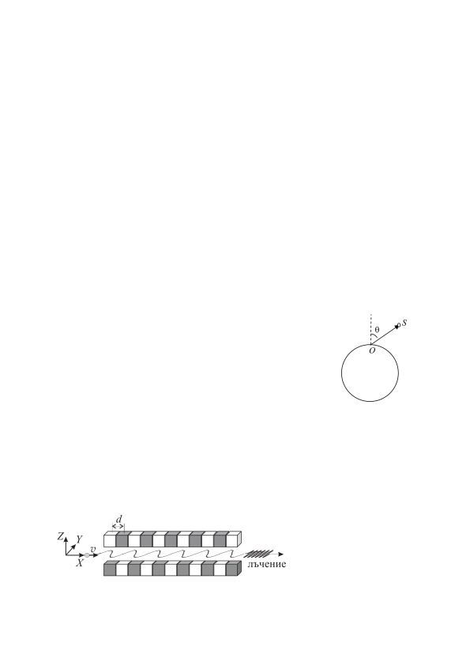

Задача 1. Космическа станция Космическа станция обикаля Земята по кръгова орбита на височина h над земната повърхност. На земята, в равнината на орбитата на станцията, се намира наблюдател, който вижда станцията като малка светла движеща се точка в небето. Поради голямата отдалеченост на станцията в сравнение със собствения й размер, наблюдателят няма зрителна представа за разстоянието до станцията. В тази задача можете да пренебрегнете околоосното въртене на Земята. Приемете Земята за еднородно кълбо с гладка повърхност. Оптичните аберации на атмосферата се пренебрегват. Основни данни Радиус на Земята, 6.37 10 m Гравитационно ускорение върху земната повърхност, 9.81 m/s2 А) Получете израз за периода T на обикаляне на станцията като функция на h и основните данни. Пресметнете T за Международната космическа станция, която обикаля на височина 423 km над земята. [2.5 т] Б) За колко време t наблюдателят ще вижда станцията на небето? Получете израз за t и го пресметнете за Международната космическа станция. [1.5 т] В) Станцията се намира над хоризонта в точка S, чийто радиус- S $\theta$ вектор спрямо наблюдателя O сключва ъгъл $\theta$ с вертикалата (вж. фигурата). Видимата за наблюдателя скорост, с която станцията се O движи на фона на звездното небе е равна на ъгловата скорост , с която се завърта зрителният лъч . Получете израз за чрез T , R, h и моментната стойност на $\theta$. [3.5 т] Г) Получете израз за отношението / на видимата скорост на станцията, когато минава през зенита (вертикално над наблюдателя) към видимата й скорост в момента, когато се намира на хоризонта. [1.5 т] Д) В момента, когато станцията минава през зенита, вертикално над наблюдателя на височина h1 = 10 km прелита и самолет със скорост 300 m/s. Подобно на станцията, самолетът изглежда като малка движеща се точка. Кой от двата летателни апарата, станцията или самолетът, изглежда че се движи по-бързо? [1.0 т]
Задача 2. Лазер на свободни електрони
На фигурата е показано принципното устройство на лазер, който работи със свободни електрони. Сноп електрони, ускорени до висока енергия, попада между две
1 успоредни редици магнити с алтернативно ориентирани полюси - т.нар. ондулатор. Разстоянието между центровете на съседните магнити е d = 1.0 cm. Поради магнитните сили, електроните се движат по вълнообразна траектория, излъчвайки електромагнитни вълни. При релативистки скорости на електроните, лъчението е насочено почти изцяло в посоката на оста X. А) Траекторията на електроните в ондулатора е синусоида, която лежи в равнината XY : (1) sin където , и са съответно амплитудата, вълновият вектор и началната й фаза. Получете израз за вълновия вектор k и пресметнете числената му стойност. [1.0 т] Б) Електроните навлизат в ондулатора със скорост . Определете компонентите на ускорението на електроните като функция на , и в точки от траекторията с координати 0и . [2.5 т] В) Електроните в ондулатора извършват трептене в направление на оста Y. При амплитуди A, малки в сравнение с разстоянието d между магнитите, периодът на трептенето може да бъде записан приблизително във вида:
(2) 1 където и са параметри, които зависят само от и . Определете и . [1.0 т] Г) Намерете дължината на електромагнитната вълна, излъчена в посока на оста X. [1.5 т] Д) Можете да приемете, че магнитната индукция в равнината на траекторията е насо- чена вертикално (по оста Z) и зависи от координатата X по закона: (3) sin където B0 е амплитудата на магнитната индукция в ондулатора На колко е равна фазата в уравнението (1) на траекторията? Посочете верния според вас отговор: 0; /2; ; 3 /2 като го обосновете кратко. [0.5 т] Е) Получете израз за амплитудата А на траекторията. Пресметнете А числено за електрони с кинетична енергия 50 MeV и при амплитуда на магнитната индукция в ондулатора 0.15 T. [2.5 т] Ж) Пресметнете дължината на вълната, излъчена в посока на оста X при тази енергия на електроните. В кой диапазон на електромагнитния спектър се намира лъчението? [1.0 т] Фундаментални константи Скорост на светлината, 3.0 10 m/s; Елементарен заряд, 1.6 10 C Маса в покой на електрона, 9.1 10 kg. Полезна формула: 1 1 при | | 1
2 Задача 3. Радиоактивна планета Кълбовидна планета с радиус 6.4 10 m е съставена от вещество с плътност 5.5 10 kg/m , еднаква в твърдо и в течно състояние. Веществото съдържа малки количества изотопи U и Th, които търпят -разпадане.* Периодите / на полуразпадане и относителните масови концентрации на двата изотопа са дадени в таблицата. След първото -разпадане следва поредица значително по-бързи ядрени разпадания, докато се образуват стабилни изотопи на оловото. Сумарната енергия , отделена в цялата поредица разпадания на дадено ядро, също е дадена в таблицата. Изотоп / (10 години) MeV c (kg изотоп/kg вещество) U 4.5 47.5 3.1 10 Th 14.0 41.8 1.2 10 Отделената при разпаданията енергия води до загряване на веществото, поради което вътрешността на планетата е разтопена, а само тънка външна обвивка (кора) се намира в твърдо състояние. Топлопроводността на твърдата кора е 2.9 W m K , a на разтопената вътрешна част 38.0 W m K .** А) Изчислете обемната плътност q (в единици W/m3) на топлинната мощност, отделяща се във веществото поради радиоактивните разпадания. [2.0 т] Б) Планетата няма атмосфера и е разположена далече от всякакви други източници на топлина. Можете да приемете, че повърхността й излъчва като абсолютно черно тяло и температурата на Космоса е 0 K. Пресметнете температурата на повърхността на планетата. [1.5 т] В) На малка дълбочина ( ) под повърхността на планетата температурата на твърдата кора се променя приблизително по линеен закон: . Получете израз за константата A посредством q и другите известни параметри, и пресметнете числената й стойност. [2.5 т] Г) Определете дебелината на твърдата кора на планетата. Приемете, че температурата на топене на веществото, изграждащо планетата, е 1500 K. [1.0 т] Д) Температурата в разтопената вътрешна част зависи от разстоянието до центъра на планетата по закона: / . Определете константата B и пресметнете температурата в центъра на планетата. [3.0 т] Основни константи: Число на Авогадро, 6.02 10 mol Елементарен заряд, 1.60 10 C Константа на Стефан-Болцман, 5.67 10 W m K
*Приемете, че относителните атомни маси на двата изотопа са равни на масовите им числа. **Топлопроводността k на дадено вещество се дефинира посредством закона на Фурие за преноса на топлина: , където Q e количеството топлина, преминало за време t през площ S, перпендикулярна на посоката x, в която се променя температурата T. Знакът минус показва, че топлината се пренася в посока от по-висока към по-ниска температура.
3